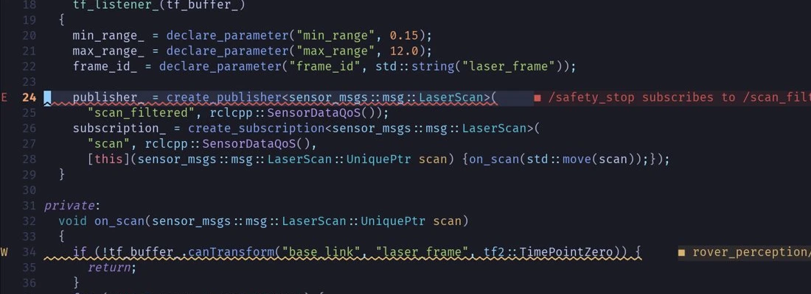
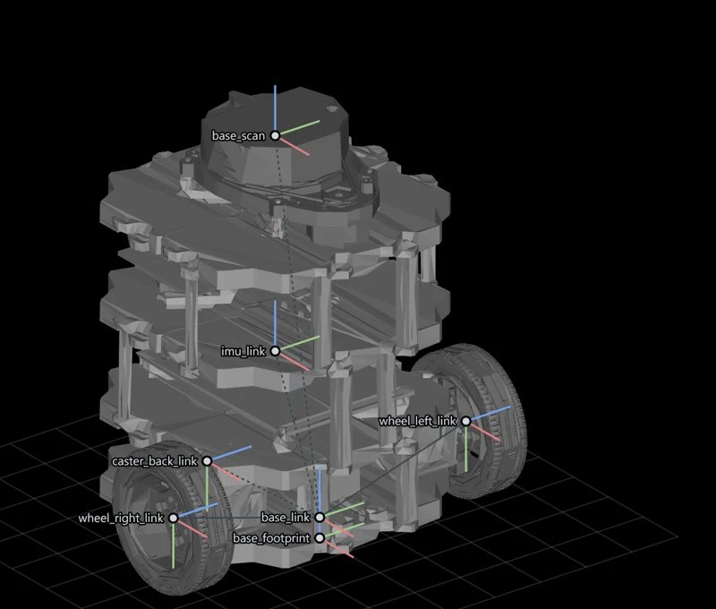
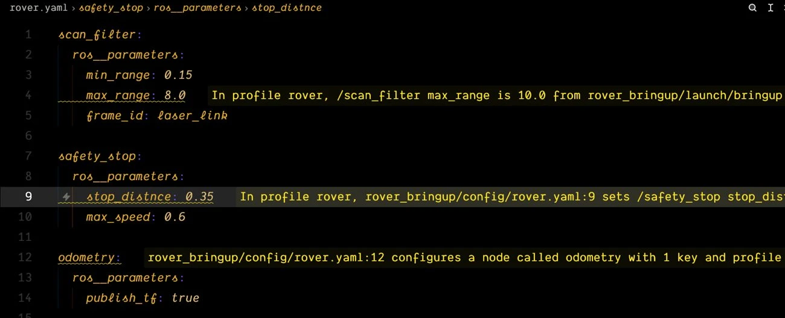
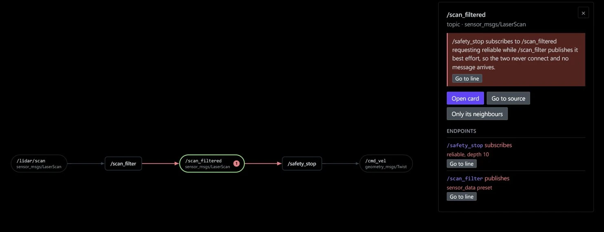

Find the layer that disagrees.
rosio reads a ROS 2 system four ways, launch files, source code, the running graph and recorded bags, and names the line where they disagree.
Installmax_range on /scan_filter
10.0 wins, set at bringup.launch.py:28. The 8.0 in rover.yaml:4 never applies.
{{rover-drift}}
{{rover-explain}}
{{nav2-param}}
{{migrate}}
{{agent}}
What it prints
The example rover in the repository carries five faults on purpose. Each command on the left is its real output, worst finding first, every one with the file and the line to edit.
Four ways in
/scan_filtered in profile rover
launch starts /scan_filter and /safety_stop
First it reads the launch files.
/scan_filtered in profile rover
launch starts /scan_filter and /safety_stop
publishes best effort, scan_filter.cpp:24
subscribes reliable, safety_stop.py:18
Then the source code.
/scan_filtered in profile rover
launch starts /scan_filter and /safety_stop
publishes best effort, scan_filter.cpp:24
subscribes reliable, safety_stop.py:18
graph: both ends present, never matched
Then the running graph.
/scan_filtered in profile rover
launch starts /scan_filter and /safety_stop
publishes best effort, scan_filter.cpp:24
subscribes reliable, safety_stop.py:18
graph: both ends present, never matched
bag: /scan_filtered recorded, 10.0 Hz
error qos.incompatible
Then the recorded bags.
A QoS that never connects.
error /safety_stop asks reliable, /scan_filter offers best effort, at scan_filter.cpp:24
A frame no model declares.
warn laser_frame is looked up at scan_filter.cpp:34, the model has laser_link
A key no node declares.
warn stop_distnce is set at rover.yaml:9, the node declares stop_distance
A value that never applies.
warn 8.0 at rover.yaml:4 loses to 10.0 at bringup.launch.py:28
A clock 37 seconds off.
error /scan stamps sit -36.980 s from the receive time, the TAI to UTC offset
Where it runs
The findings land where you already work: on the line in the editor, in a graph before the robot runs, and in the answers of a coding agent.

A QoS that can never connect, on the line that creates the publisher.

The URDF drawn from its meshes, every frame named.

A misspelt key, a shadowed value and a block no node reads, inline in the parameters file.

Every node and topic of a profile, drawn before the robot runs, with the finding on the topic it breaks.
Agents
Claude Code, Codex, Cursor, Gemini CLI, Copilot, Aider, OpenCode, Amp and Kilo read the atlas through twelve MCP tools.
rosio install claude-codePython 3.10 and later
One install. The core needs PyYAML and nothing else; C++ reading, bag stamps and the MCP server are extras.
pip install rosioROS 2 humble and jazzy
The running graph is read over Fast DDS, Cyclone DDS or Zenoh, and recordings through rosbag2.
rosio probeRun it on your workspace.
Install it, point it at the workspace, and fix the first line it names.